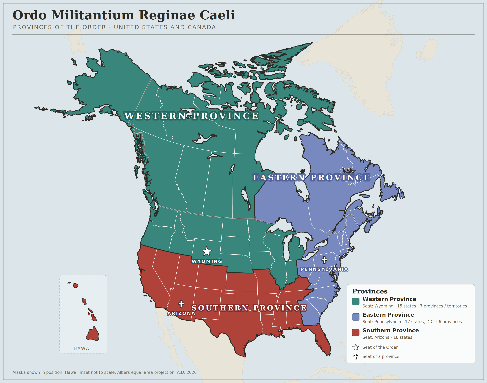

Ordo Militantium Reginae Caeli
The Ordo Militantium Reginae Caeli is spread across the United States and Canada, and for its governance that territory is divided into three provinces — Western, Eastern, and Southern.
A province is the largest territorial division of the Order. Each is governed by a Grand Chancellor, who holds authority over everything within it and answers for it to the General Council. Beneath the province lies the district, governed by a Prior Provincial; and within the district the commandery, the local body in which the daily life of the Order is actually lived.
The divisions are practical rather than sentimental. They exist so that no member is too far from a superior who knows him, and so that the works of the Order in healthcare, education, the Faith, and fraternity are carried by men and women who understand the ground they stand on.

Each province is set out below with its seat and the territories committed to it.
The largest of the three by territory, the Western Province runs from the Pacific coast and Alaska across the northern plains to the Great Lakes, and takes in the whole of western and northern Canada. The seat of the Order itself lies within it, in Wyoming. For the present it also holds every territory lying outside the three provinces, as set out below.
15 states • 7 Canadian provinces and territoriesThe Eastern Province gathers New England, the Mid-Atlantic, and the Atlantic South as far as Georgia, together with eastern Canada from Ontario to Newfoundland. Its seat is in Pennsylvania.
17 states, and the District of Columbia • 6 Canadian provinces and territoriesThe Southern Province reaches from California and Hawaii across the desert South-west and the southern plains to the Gulf and Florida, taking in the Ozarks and the Upper South. Its seat is in Arizona.
18 statesThe three provinces cover the United States and Canada. The Order, however, is not bounded by them, and men and women write to us from places no province yet reaches.
Until further provinces are erected, every territory lying outside the three is attached provisionally to the Western Province, in which the seat of the Order lies. A member in such a place is a member of the Western Province in full: he stands under its Grand Chancellor, he is counted in its numbers, and he is owed the same care as any brother within its mapped bounds.
This is a provision of necessity, not a settlement. As the Order grows, the General Council will erect new provinces and commit these territories to them. Until that day the Western Province holds them in trust.
Those residing outside the United States and Canada who wish to know how they stand are asked to write to the Order.
The boundaries of the provinces, and the districts within them, are established by the General Council and may be altered as the Order grows. Members are attached to the province in which they reside.
To ask which district or commandery serves your area, write to us.
The Order receives members throughout the United States and Canada. Tell us where you are and we will point you to the nearest commandery.